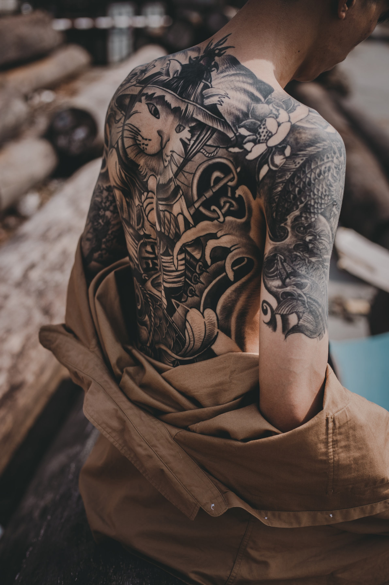
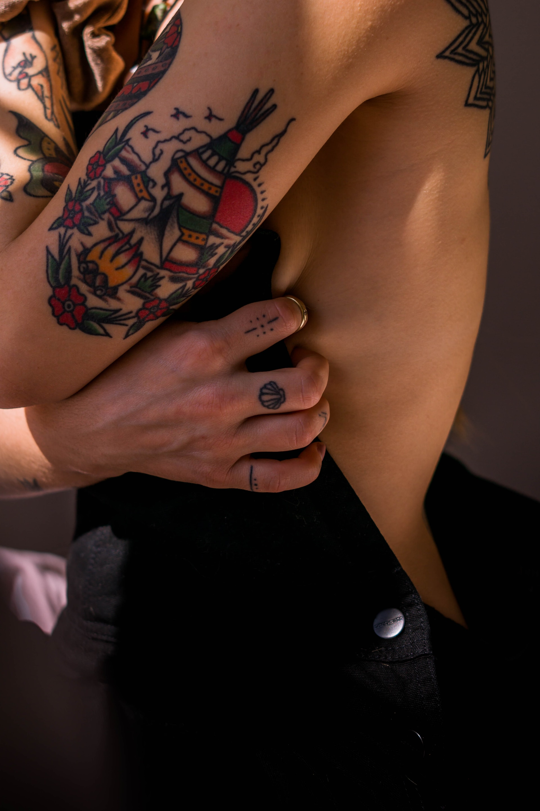
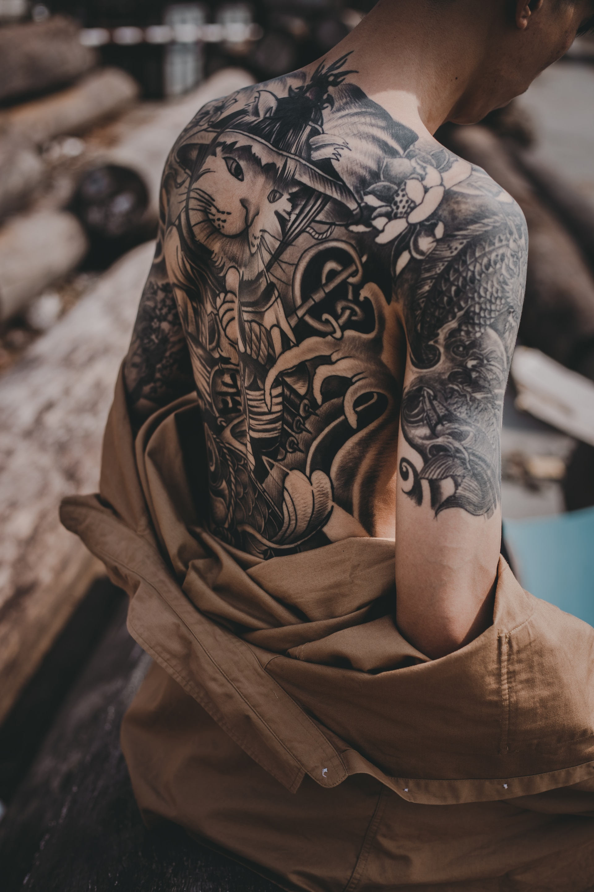
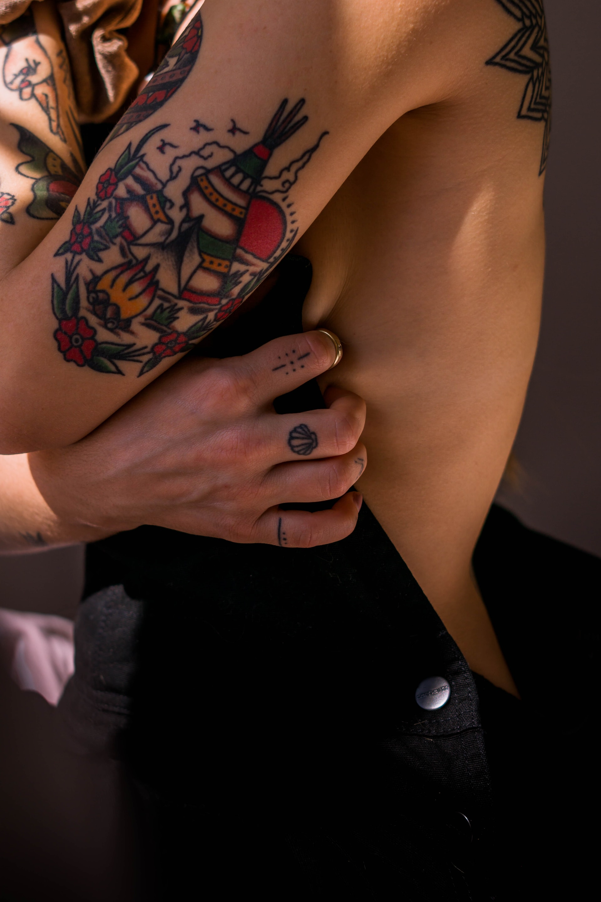

Sobre

Aqui no Inked Tattoo Studio, nos orgulhamos em oferecer uma experiência única e de alta qualidade para todos os amantes da arte corporal. Nossa equipe de artistas talentosos e experientes está pronta para transformar suas ideias em belíssimas tatuagens personalizadas. Trabalhamos em estreita colaboração com nossos clientes, entendendo suas preferências e criando projetos que representem suas histórias e personalidades. Com um forte compromisso com a segurança e a higiene, nosso estúdio segue rigorosos padrões de esterilização e utilização de materiais descartáveis de alta qualidade. Acreditamos que a segurança de nossos clientes é uma prioridade absoluta.
![Esta imagem apresenta uma tatuagem intrincadamente detalhada no braço de uma pessoa. A tatuagem apresenta um belo padrão floral, exibindo uma excepcional habilidade artística. Cada flor meticulosamente desenhada adiciona profundidade e complexidade ao design geral. Apresentada em preto e branco, a imagem destaca o contraste entre a tinta da tatuagem e a pele da pessoa, enfatizando os detalhes intricados. O plano de fundo e o primeiro plano consistem em várias tonalidades de cinza, acentuando ainda mais o foco na tatuagem. O motivo floral é notavelmente proeminente e serve como tema central do design.](./img/tattoo-flower.jpg) 


